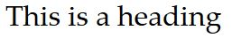
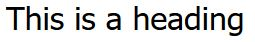
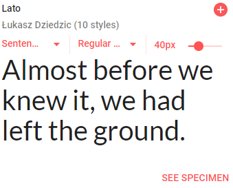
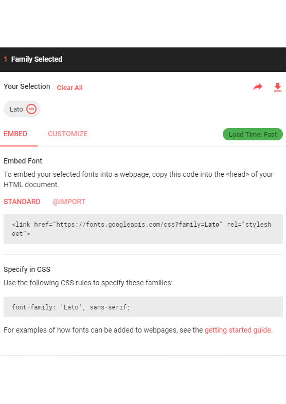
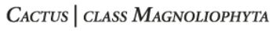

CSS fonte
Man angiver en font/skrifttype i CSS ved at bruge attributten font-family.
Font-family skrives således, at man først angiver den specifikke font, man ønsker at anvende. Herefter kan man angive en alternativ font, som man er mere sikker på, at brugerne har installeret på sin computer. Til slut angiver man en generisk font-type.
De generiske font-typer
Fonte opdeles som udgangspunkt i to generiske typer: serif og sans-serif.
Serif fonte er fx Times New Roman, og de kan genkendes på deres små seriffer (de små linjer bl.a. i bunden og toppen af hvert bogstav).

Sans-serif fonte er fx Arial, og de har ikke de små seriffer, som serif fontene har (sans-serif er fransk og betyder "uden serif").

Man betragter ofte serif-fontene som værende lidt gammeldags (det er også de ældste fonte af de to typer), hvorimod sans-serif fontene bliver set som mere moderne. Dette er vigtigt i forhold til, hvilket signal man gerne vil have ens hjemmeside skal sende.
Når du skal angive din font med CSS, skal du skrive følgende kode:
- font-family: Tahoma, Arial, sans-serif;
- Tahoma er den specifikke font, som du gerne vil have brugt på dit website, hvis brugeren har den installeret
- Arial er det bedste alternativ, som er en font, du ved, er installeret på rigtigt mange maskiner
- Det sidste alternativ er den generiske font-type, som du vil have, hvis hverken Tahoma eller Arial er tilgængelig. Brugerens computer vil så vælge den standard sans-serif font, som er installeret på computeren
- Hvis et af elementerne er i flere ord (fx Times New Roman), skal dette skrives i anførselstegn: "Times New Roman"
Brug af fonte på denne måde kræver, at de er installeret på brugerens computer. Du kan på w3schools se en liste over fonte, som kan anvendes på næsten alle computere.
Eksterne fonte / Google Fonts
Hvis du vil være helt sikker på at få en bestemt font vist på din hjemmeside og ikke være afhængig af, hvad brugeren har installeret på sin computer, kan du bruge en ekstern font.
En af de sider, der bliver brugt allermest til eksterne fonte, er Google Fonts.
Alle de fonte, der findes på Google Fonts, er gratis at bruge.
Find og anvend en Google Font
På Google Fonts starter du med at finde den font, du gerne vil bruge. Herefter klikker du på det rød/hvide plus i øverste højre hjørne på fonten.

Herefter kommer fonten ned at ligge i dine valgte fonte, som du kan se i nederste højre hjørne i feltet "Family(s) Selected". Hvis du klikker på stregen til højre, kan du folde vinduet ud og se, hvordan du bruger den eller de fonte, som du har valgt:

De to grå kasser er den kode, du skal skrive ind. Den øverste grå kasse med "link href" koden skal skrives ind i HEAD-sektionen på dine HTML-sider (alle de sider, som skal bruge denne font - hvilket næsten altid vil være alle sider i dit website). Koden i den nederste grå kasse er den kode, som du skal skrive ind i dit stylesheet, der hvor du gerne vil have denne font til at slå igennem. Dvs. hvis du vil bruge denne font til al din tekst på hele siden, skriver du koden i din BODY-selector. Hvis du fx kun vil bruge den på overskrifter, skriver du den i din h1-selector.
Andre font stylinger
Du kan også angive andre attributter på din skrifttype med CSS. De fleste af dem er listet nedenfor:
Font Style
Font style anvendes primært til at lave kursiv skrift:
- font-style: italic; (kursiv)
- font-style: normal; (ikke kursiv)
Font Size
Med font size angiver du størrelsen på din skrifttype:
Der må ikke være mellemrum mellem tallet og enheden. 16 px vil ikke virke - men 16px virker.
Font Variant
Font variant bruges til at lave kapitæler (alle små bogstaver laves om til store bogstaver, som har samme højde som små bogstaver). Bogstaver, som var store bogstaver i den oprindelige tekst, bliver ved med at se ud, som de hele tiden har gjort.
- font-variant: small-caps;

Font Weight
Font weight angiver fed eller tynd skrift. Du kan angive font-weight enten med et tal mellem 100 og 900 (400 er normal tykkelse og 700 svarer til fed skrift (bold)) eller keywordet "normal" eller "bold":
- font-weight: 800;
- font-weight: bold;
Tekst stylinger
Nedenfor finder du flere muligheder for at style på din tekst.
Text Alignment
Du kan justere din tekst enten til højre, venstre, centreret eller justeret (lige højre og venstre kant):
- text-align: left;
- text-align: right;
- text-align: center;
- text-align: justify;
Text Decoration
Text decoration anvendes til at lave understregninger, gennemstregninger og lignende på din tekst:
- text-decoration: overline; (giver en linje over din tekst)
- text-decoration: line-through; (giver en linje igennem din tekst, så den ser ud, som om, den er streget ud/over)
- text-decoration: underline; (giver en understregning under din tekst)
- text-decoration: none; (fjerner alle streger ved din tekst. Bruges meget ofte til at fjerne den standard understregning, som der sættes på links)
Lad være med at understrege anden tekst end links, da det vil forvirre brugerne. De er vant til, at understreget tekst i en browser er noget, man kan klikke på.
Text Transform
Med text-transform kan du lave din tekst om til små bogstaver, store bogstaver eller med stort begyndelsesbogstav:
- text-transform: uppercase; (laver om til store bogstaver)
- text-transform: lowercase; (laver om til små bogstaver)
- text-transform: capitalize; (laver om til at hvert ord starter med stort bogstav)
Text Indentation
Med text-indent kan du lave en indrykning af den første linje i en tekst:
Line Height
Du kan angive linjehøjden på flere forskellige måder:
- Med et tal: dette tal ganges så med den skriftstørrelse, som bruges på den aktuelle tekst (hvis teksten er 16px og linjehøjden er 1.5, bliver linjehøjden på 24px)
- Med et antal pixels
Text Shadow
Med text-shadow kan du sætte skygge på din tekst. Dette anvendes ofte på overskrifter for at få dem til at stå tydeligere frem.
Du kan angive fire værdier, når du laver en text-shadow:
- Horisontal placering af skyggen (hvor langt væk fra teksten skal skyggen være vandret i pixels)
- Vertikal placering af skyggen (hvor langt væk fra teksten skal skyggen være lodret i pixels)
- Hvor stort et område skal din skygge fylde (dens sløring/blur). Angives også i pixels. Denne værdi er ikke påkrævet og du kan godt skrive din CSS-kode uden den.
- Skyggens farve (farven kan angives på samme måder, som du har lært tidligere: farvenavn, RGB-kode eller hex-kode)
- text-shadow: -2px -2px 4px silver;
- text-shadow: 3px 3px rgb(243, 92, 10);
Fælles opgave
Skrifttype/font
Du skal sætte skrifttypen på al tekst i body'en på siden her til at være Arial, Helvetica, sans-serif
Alle overskrifter (både h1'ere, h2'ere og h3'ere) skal være Roboto fra Google Fonts
TIP: Hvis du skal sætte den samme attribut på flere tags/selectors, kan du skrive dette ved at adskille dem med komma:
h1, h2, h3 {
font-family: ....
}
Øvrig styling af tekst
Alle h1'ere skal have en font-weight på 800.
Alle h2'ere skal have en font-weight på 600.
Siden skal have følgende skriftstørrelser for overskrifter:
- h1'ere: 36px
- h2'ere: 30px
- h3'ere: 24px
Alle h1'ere skal laves om til kapitæler.
Alle h2'ere skal laves om til store bogstaver.
h1'ere og h2'ere skal centreres.
Alle links skal have fjernet understregningen. Samtidigt skal skriftfarven på links laves om til en anden farve end resten af din tekst. Sørg for at vælge en farve, som ligner din skriftfarve men enten er lidt mørkere eller lysere.
Linjehøjden på dine li-tags skal sættes til 1.8.
h1'ere og h2'ere skal have en tekstskygge, som er placeret 2px til venstre (du skal bruge negative tal for at placere skyggen til venstre for teksten), 2px over (du skal bruge negative tal for at placere skyggen over teksten), som er 2px sløret og anvender farven "silver".
Videre med dit fugleleksikon
Du skal nu arbejde videre på dit fugleleksikon. Find to skrifttyper på Google Fonts, som du vil bruge på din side. En skrifttype til h1'ere og h2'ere og en anden skrifttype til al anden tekst.
Brug de øvrige attributter, som du har lært i løbet af i dag, til at gøre din tekst pæn og interessant på din side.